컴퓨터응용가공산업기사 (2016-10-01 기출문제)
1과목: 기계가공법 및 안전관리
1. 기계가공을 할 때, 안전사항으로 가장 적합하지 않은 것은?
- 공구는 항상 일정한 장소에 비치한다.
- 기계가공 중에는 장갑을 착용하지 않는다.
- 공구의 보관을 위한 작업복의 주머니는 많을수록 좋다.
- 비산되는 칩에 의해 화상을 입을 수 있으므로 작업복을 착용한다.
(정답률: 92%)

2. 선반가공에서 공작물이 지름에 비하여 길이가 긴 경우에 떨림을 방지하고 정밀도가 높은 제품을 가공하고자 할 때 사용되는 장치는?
- 면판
- 돌리개
- 맨드릴
- 방진구
(정답률: 82%)
3. 밀링 머신의 종류에서 드릴의 비틀림 홈 가공에 가장 적합한 것은?
- 만능 밀링 머신
- 수직형 밀링 머신
- 수평형 밀링 머신
- 플레이너형 밀링 머신
(정답률: 65%)
4. 표면연삭기에서 숫돌의 원주속도 V=2400m/min이고, 연삭력 P=147.15N이다. 이때 연삭기에 공급된 동력이 10PS라면 이 연삭기의 효율은 몇 %인가?
- 70%
- 75%
- 80%
- 125%
(정답률: 43%)
5. 버니싱(burnishing)작업의 특징으로 틀린 것은?(오류 신고가 접수된 문제입니다. 반드시 정답과 해설을 확인하시기 바랍니다.)
- 표면거칠기가 우수하다.
- 피로한도를 높일 수 있다.
- 정밀도가 높아 스프링백을 고려하지 않아도 된다.
- 1차 가공에서 발생한 자국, 긁힘 등을 제거할 수 있다
(정답률: 56%)
6. 가공물 표면에서 작은 알갱이를 투사하여 피로강도를 증가시키는 가공법은?
- 숏 피닝
- 방전 가공
- 초음파 가공
- 플라즈마 가공
(정답률: 82%)
7. 밀링 머신의 부속장치가 아닌 것은?
- 방진구
- 분할대
- 회전 테이블
- 슬로팅 장치
(정답률: 78%)
8. 나사산의 각도를 측정하는 기기가 아닌 것은?
- 투영기
- 공구 현미경
- 오토콜리메이터
- 만능 측정 현미경
(정답률: 60%)
9. 다음 절삭제 중 윤활성은 좋으나 냉각성이 적어 주로 경절삭에 사용되는 혼합유제는?
- 광유
- 석유
- 유화유
- 지방질유
(정답률: 62%)
10. 다음 그림과 같은 원형 관통 구멍을 가공할 때 사용되는 절삭공구가 아닌 것은?(문제 오류로 가답안 발표시 4번으로 발표되었지만 확정답안 발표시 전항 정답 처리되었습니다. 여기서는 4번을 누르면 정답 처리 됩니다.)
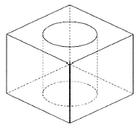
- 드릴
- 엔드릴
- 페이스 밀
- 카운터 보어
(정답률: 73%)
11. 기계가공방법의 설명이 틀린 것은?
- 리밍 작업은 뚫려 있는 구멍을 높은 정밀도로, 가공 표면의 거칠기를 우수하게 하기 위한 가공이다.
- 보링 작업은 이미 뚫어져 있는 구멍을 필요한 크기로 넓히거나 정밀도를 높이기 위한 가공이다.
- 카운터 보링 작업은 나사 머리의 모양이 접시 모양일 때 테이퍼 원통형으로 절삭하는 가공이다.
- 스폿 페이싱 작업은 단조나 주조품 등의 볼트나 너트를 체결하기 곤란한 경우에 구멍주위에 체결이 잘 되도록 부분만을 평탄하게 하는 가공이다.
(정답률: 73%)
12. 결합도가 높은 숫돌에서 구리와 같이 연한 금속을 연삭할 경우, 숫돌 기능이 저하되는 현상은?
- 채터링
- 트루잉
- 눈 메움
- 입자탈락
(정답률: 72%)
13. 기어의 형상 오차 측정항목이 아닌 것은?
- 치형 오차
- 피치 오차
- 편심 오차
- 치폭의 오차
(정답률: 61%)
14. 다음과 같이 테이퍼 가공을 하고자 할 때, 복식 공구대의 회전각도는?
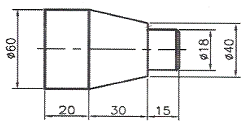
- 12.86°
- 16.67°
- 18.43°
- 21.80°
(정답률: 49%)
15. 드릴의 연삭방법에 관한 설명 중 틀린 것은?
- 절삭날의 좌우 길이를 같게 한다.
- 절삭날이 중심선과 이루는 날 끝 반각을 같게 한다.
- 표준드릴의 경우 날끝각은 90° 이하로 연삭한다.
- 절삭날의 여유각은 일감의 재질에 맞게 하고 좌우를 같게 한다.
(정답률: 74%)
16. 선반 작업할 때 가공물이 대형이고 중량물일 때 다음 중 센터(center) 선단의 각도로 적합한 것은?
- 45°
- 60°
- 90°
- 120°
(정답률: 66%)
17. CNC 선반에서 회전수가 200rpm일 때, 스핀들의 2회전 휴지를 위한 정지시간은 몇초인가?
- 0.3
- 0.4
- 0.5
- 0.6
(정답률: 49%)
18. 비교측정 방식의 측정기가 아닌 것은?
- 미니미터
- 다이얼 게이지
- 버니어 캘리퍼스
- 공기 마이크로미터
(정답률: 76%)
19. 수용성 절삭제의 사용 목적으로 틀린 것은?
- 냉각작용
- 윤활작용
- 세척작용
- 코팅작용
(정답률: 81%)
20. 막힌 구멍이나 인성이 강한 재료의 태핑에 적합한 탭은?
- 관용 탭
- 핸드 탭
- 포인트 탭
- 스파이얼 탭
(정답률: 67%)
2과목: 기계설계 및 기계재료
21. 다음 중에서 주철에 대한 설명으로 틀린 것은?
- 주철은 액체일 때 유동성이 좋다.
- 공정주철의 탄소함유량은 약 4.3%C이다.
- 비중은 C와 Si 등이 많을수록 작아진다.
- 용융점은 C와 Si 등이 많을수록 높아진다.
(정답률: 48%)
22. 순철의 변태에서 α-Fe이 γ-Fe로 변화하는 변태는?
- A1 변태
- A2 변태
- A3 변태
- A4 변태
(정답률: 59%)
23. 다음 담금질 조직 중에서 경도가 가장 높은 것은?
- 페라이트
- 펄라이트
- 마텐자이트
- 트루스타이트
(정답률: 81%)
24. Fe-C 평형 상태도에서 다음 중 γ-Fe의 격자구조는?
- 체심입방격자 (BCC)
- 면심입방격자 (FCC)
- 조밀육방격자 (HCP)
- 정방격자(BCT)
(정답률: 65%)
25. 두 종류 이상의 금속 특성을 복합적으로 얻을 수 있는 재료를 말하며, 일반적으로 얇은 특수한 금속을 두껍고 가격이 저렴한 모재에 야금학적으로 접합시킨 금속 복합 재료는?
- 섬유 강화 금속 복합 재료
- 일방향 응고 공정 합금
- 다공질 재료
- 클래드 재료
(정답률: 51%)
26. 다음 중 주물에 널리 쓰이는 Al-Cu-Si계 합금을 무엇이라 하는가?
- 라우탈 (lautal)
- 알민(almin) 합금
- 로엑스(Lo-Ex) 합금
- 하이드로날륨(hydronalium)
(정답률: 68%)
27. 다음 중 구리합금이 아닌 것은?
- 양은
- 켈밋
- 실루민
- 문쯔메탈
(정답률: 52%)
28. 열처리 중, 연화를 목적으로 하며 오스테나이징 후 서랭하는 열처리 조작은?
- 풀림
- 뜨임
- 담금질
- 노멀라이징
(정답률: 60%)
29. Fe-C 평형상태도에서 공석점의 탄소 함유량은 약 몇%인가?
- 0.2%
- 0.5%
- 0.8%
- 1.2%
(정답률: 68%)
30. 강의 표면 경화법에 대한 설명 중 틀린 것은?
- 침탄법에는 고체침탄법, 액체침탄법, 가스침탄법 등이 있다.
- 질화법은 강 표면에 질소를 침투시켜 경화하는 방법이다.
- 화염경화법은 일반 담금질법에 비해 담금질 변형이 적다.
- 세라다이징은 철강 표면에 Cr을 확산 침투시키는 방법이다.
(정답률: 68%)
31. 일반 산업용으로 사용되는 V 벨트의 각도는 몇 ° 인가?
- 40°
- 42°
- 44°
- 60°
(정답률: 66%)
32. 구름베어링의 구조에서 전동체의 원둘레에 고르게 배치하여 전동체가 물리지 않고 일정한 간격을 유지할 수 있게 하며, 서로 접촉을 피하고 마모와 소음을 방지하는 역할을 하는 것은?
- 피봇
- 저널
- 리테이너
- 스트레이너
(정답률: 64%)
33. 압축력이 12760N, 코터의 두께 10mm, 코터의 폭이 20mm일 때 코터의 전단응력은 약 몇 MPa인가?
- 31.9
- 319
- 63.8
- 638
(정답률: 25%)
34. 정사각형 단면의 봉에 20kN의 압축하중이 작용할 때 생기는 응력을 5000 N/cm2가 되게 하려면 정사각형의 한 변의 길이를 약 몇 cm로 해야하는가?
- 0.2
- 0.4
- 2
- 4
(정답률: 43%)
35. 스프링 종류 중 하나인 고무 스프링(rubber spring)의 일반적인 특징에 관한 설명으로 틀린 것은?
- 여러 방향으로 오는 하중에 대한 방진이나 감쇠가 하나의 고무로 가능하다.
- 형상을 자유롭게 선택할 수 있고, 다양한 용도로 적용이 가능하다.
- 방진 및 방음 효과가 우수하다.
- 저온에서 방진 능력이 우수하여 –10°C 이하의 저온 저장고 방진장치에 주로 사용된다.
(정답률: 77%)
36. 표준 스퍼 기어에서 피치원 지름(D)을 구하는 공식은? (단, m은 모듈, Z는 잇수이다. )
- D = mZ
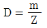
- D = m(Z+2)
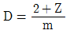
(정답률: 71%)
37. 350rpm으로 15kW의 동력을 전달시키는 축의 지름은 약 몇 mm 이상이어야 하는가? ( 단, 축의 허용전단응력은 25Mpa이다. )
- 35
- 40
- 44
- 52
(정답률: 39%)
38. 블록 브레이크에서 브레이크 용량을 결정하는 요소로 거리가 먼 것은?
- 접촉부 마찰계수
- 브레이크 압력
- 드럼의 원주 속도
- 드럼의 용량
(정답률: 66%)
39. 1줄 겹치기 리벳 이음에서 피치는 리벳 지름의 3배이고, 리벳의 전단력과 강판의 인장력이 같을 때, 강판 두께(t)와 리벳지름(d)과의 관계는?(단, 강판에서 발생하는 인장응력은 리벳에서 발생하는 전단응력의 2배이다.)
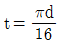
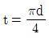
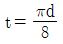
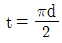
(정답률: 43%)
40. 유효지름이 모두 동일한 미터 보통 나사에서 리드각이 가장 큰 것은?
- 피치 5mm인 1줄 나사
- 피치 3.5mm인 2줄 나사
- 피치 2mm인 3줄 나사
- 피치 6mm인 1줄 나사
(정답률: 76%)
3과목: 컴퓨터응용가공
41. RS-232C를 이용하여 데이터를 전송하는 경우 각 핀의 신호에 대한 연결로 틀린 것은?
- CTS – 송신 가능
- RTS – 송신 요구
- TX – 수신 데이터
- GND – 신호용 접지
(정답률: 56%)
42. 다음 2차원 변환행렬에서 m, n은 어떤 변환과 관계되는가?
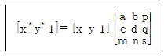
- 이동(translation)
- 전단(shearing)
- 투사(projection)
- 전체적인 스케일링(overall scaling)
(정답률: 75%)
43. 특정 값이나 변수로 표현된 수식을 입력하여 형상을 생성하는 방식으로 이후 매개변수나 수식을 변경하면 자동으로 형상이 수정되는 형상 모델링 방법은?
- Surface 모델링
- Prametric 모델링
- 와이어 프레임 모델링
- Feature-Based 모델링
(정답률: 70%)
44. 주어진 조건으로 동일하게 3차원 솔리드 모델링을 수행 했을 대, 다음중 부피가 가장 큰 것은?
- 지름이 10mm인 구
- 한 변의 길이가 10mm인 정육면체
- 지름이 10mm이고, 높이가 10mm인 원뿔
- 지름이 10mm이고, 높이가 10mm인 원기둥
(정답률: 76%)
45. 다음 중 형상모델링을 필요로 하는 분야로 가장 거리가 먼 것은?
- 트랙볼 계산
- 투시도 생성
- 공구경로 생성
- 중량, 관성 모멘트 계산
(정답률: 54%)
46. 원뿔을 임의 평면으로 교차시킨 경우에 구성되는 원추곡선이 아닌 것은?
- 선(line)
- 원(cirecle)
- 타원(ellipse)
- 쌍곡선(hyperbola)
(정답률: 61%)
47. 다음 형상모델링 방법 중 선에 의해서만 형상을 표시하는 방법은?
- 곡면 모델링
- 솔리드 모델링
- B-Spline 모델링
- 와이어프레임 모델링
(정답률: 73%)
48. Rapid Prototyping(RP) 방법 가운데 박판적층(Laminated Object Manufacturing, LOM)법에 대한 설명으로 옳은 것은?
- 재료와 접착제의 층이 있어 부품의 성질이 균일하지 않는다.
- 아치와 같은 형상의 부품을 만들 때는 외부지지 구조물을 같이 만들어야 한다.
- 표면적에 비해 부피의 비율이 높은 부품을 만들어 내고자 할 때 시간이 많이 걸리므로 적절한 방법이 아니다.
- 지지대 역할을 한 왁스를 녹여내면 되므로 적층이 완료된 후 불필요한 부분의 재료들을 제거하는 것이 매우 쉽다.
(정답률: 36%)
49. 다음 중 원호를 가장 정확하게 나타낼 수 있는 곡선은?
- 2차 NURBS 곡선
- 3차 Herimite 곡선
- 4차 Bezier 곡선
- 5차 B-Spline 곡선
(정답률: 58%)
50. CAM을 이용한 금형제품의 성형부 가공에서, 곡면의 일부분을 NC가공하고자 할 때 사용되는 방법은?
- filed
- island
- offse
- rounding
(정답률: 57%)
51. 3차원 솔리드 모델링 형상 표현방법 중 CSG(Constructive Solid Geometry)에 해당되는 사항은?
- 경계면에 의한 표현
- 로프트(loft)에 의한 표현
- 스위프(sweep)에 의한 표현
- 프리미티브(primitive)에 의한 표현
(정답률: 66%)
52. IGES에 대한 설명으로 옳은 것은?
- 데이터 교환의 표준형식으로 체택된 규격
- 가로축 방향을 u축, 세로축 방향을 v축으로 갖는 좌표계
- 각 화소(pixel)마다 해당 점 과의 거리를 저장하는 기억 장소
- 이차원 도형을 어느 직선 방향으로 이동시키거나 회전시켜 입체를 생성하는 기능
(정답률: 74%)
53. NC 데이터를 이용하여 실제 가공 전에 컴퓨터상에서 공구의 위치, 과절삭, 미절삭 등을 확인하는 과정은?
- 전처리
- 후처리
- 공구경로 검증
- NC 데이터 전송
(정답률: 74%)
54. 3차원 형상모델을 분해모델로 저장하는 방법 중 틀린 것은?
- facet 모델
- 복셀(vocel) 모델
- 옥트리(octree) 표현
- 세포분해(cell decomposition) 모델
(정답률: 52%)
55. 곡면의 iso-parametric 곡선에 대한 설명 중 틀린 것은?
- 구의 경우, iso-prametric 곡선은 위도선과 경도선이다.
- 직선을 곡면에 투영시켜 생성된 곡선은 일반적으로 iso-parametric 곡선이 아니다.
- iso-parametric 곡선을 그리면 그리지 않은 경우보다 화면에 모델 display 시간이 느려진다.
- iso-parametric 곡선은 곡면 위의 곡선이므로 그대로 저장하여도 메모리를 차지하지 않는다.
(정답률: 61%)
56. 2차원에서 하나의 원을 정의하는 방법으로 틀린 것은?
- 원의 중심과 반지름
- 중심과 원주상의 한 점
- 일직선상에 놓여 있지 않은 임의의 3점
- 기울기가 서로 다른 세 개의 직선에 접하는 원
(정답률: 53%)
57. 은선 및 은면 제거에 대한 설명 중 틀린 것은?
- 후방향(back-face) 알고리즘에서는 물체의 바깥쪽 방향에 있는 법선 벡터가 관촬자 쪽을 향하고 있다면 물체의 면이 가시적이고, 그렇지 않으면 비가시적이다.
- 깊이 분류(depth sorting) 알고리즘에서는 물체의 면들이 관촬자로부터의 거리가 정렬되며, 가장 가까운 면부터 가장 먼 면으로 각각의 색깔로 채워진다.
- Z-버퍼 방법의 원리는 임의의 스크린의 영역이 관촬자에게 가장 가까운 요소들에 의해 차지된다는 깊이 분류(depth sorting) 알고리즘과 기본적으로 유사하다.
- 은선 제거를 위해서는 물체의 모든 모서리를 수반된 물체들의 면들에 의해 가려졌는지를 테스트하며, 각각의 중첩된 면들에 의해 가려진 부분을 모서리로부터 순차적으로 제거한 후 모든 모서리들의 남아있는 부분을 모아 그린다.
(정답률: 45%)
58. 가상 시작품(virtual prototype)에 대한 설명으로 가장 거리가 먼 것은?
- 설계 시 문제점을 사전에 검증하고 수정하는 데 도움을 준다.
- 가상 시작품을 사용하여 제품의 조립 가능성을 미리 검사해 볼 수 있다.
- NC 공구 경로를 미리 시뮬레이션함으로써, 가공기계의 문제점을 미리 확인할 수 있다.
- 각 부품의 형상 모델을 컴퓨터 내에서 가상으로 조립한 시작품 조립체 모델을 말한다.
(정답률: 64%)
59. CAD 시스템을 이용하여 부드러운 곡면을 만드는 방법으로 다음 중 가장 적절하지 않은 것은?
- 두 개의 떨어진 곡선을 여러 개의 직선으로 연결하여 곡면을 만든다.
- 여러 개의 단면곡선을 입력한 후 그 곡선들을 보간하여 곡면을 만든다.
- 임의의 원과 그 원의 중심이 지나야 할 곡선을 이용하여 파이프 모양을 만든다.
- 곡면 위의 많은 점의 좌표를 측정한 후 이 점들을 모두 지나는 곡면을 만든다.
(정답률: 44%)
60. 조립체 모델링에서 사용되는 만남 조건(mating condition)이 아닌 것은?
- 공간(space)
- 일치(coincident)
- 직교(perpendicular)
- 평행(parallel)
(정답률: 65%)
4과목: 기계제도 및 CNC공작법
61. 재료 기호가 ‘STC 140’으로 되어 있을 때 이 재료의 명칭으로 옳은 것은?
- 합금 공구강 강재
- 탄소 공구강 강재
- 기계구조용 탄소 강재
- 탄소강 주강품
(정답률: 76%)
62. 비경화 테이퍼 핀의 호칭 치수는 다음 중 어는 것인가?
- 굵은 쪽의 지름
- 가는 쪽의 지름
- 중앙부의 지름
- 굵은 쪽과 가는 쪽 지름의 평균 지름
(정답률: 54%)
63. 기하공차의 기호에서 원주 흔들림 공차 기호는?
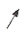
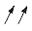
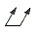
(정답률: 57%)
64. 치수를 나타내는 방법에 관한 설명으로 틀린 것은?
- 도면에서 정보용으로 사용되는 참고(보조) 치수는 공차를 적용하거나 하여 ( ) 안에 표시한다.
- 척도가 다른 형체의 치수는 치수 값 밑에 밑줄을 그어서 표시한다.
- 정면도에서 높이를 나타낼 때는 수평의 치수선을 꺾어 수직으로 그은 끝에 90°의 개방형 화살표로 표시하며, 높이의 수치값은 수평을 그은 치수선 위에 표시한다.
- 같은 형체가 반복될 경우 형체 개수와 그 치수값을 ‘×’ 기호로 표시하여 치수 기입을 해도 된다.
(정답률: 42%)
65. 나사의 종류 중 ISO 규격에 있는 관용 테이퍼 나사에서 테이퍼 암나사를 표시하는 기호는?
- PT
- PS
- Rp
- Rc
(정답률: 53%)
66. 치수가 다음과 같이 명기되어 있을 때 치수공차는 얼마인가?
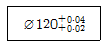
- 0.04
- 0.80
- 0.06
- 0.02
(정답률: 71%)
67. 다음 끼워 맞추어지는 형체 중 죔새가 가장 큰 것은?
- ø52H7/m6
- ø52H7/p6
- ø52E6/h6
- ø52G7/h6
(정답률: 67%)
68. 용접 기호 중 '
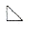
' 의 용접 종류는?- 필릿 용접
- 비드 용접
- 점 용접
- 프로젝션 용접
(정답률: 78%)
69. 도면에서 나사 조립부에 M10 – 5H/5g 이라고 기입되어 있을 해독으로 올바른 것은?
- 미터 보통 나사, 수나사 5H급, 암나사 5g급
- 미터 보통 나사, 1인치당 나사산 수 5
- 미터 보통 나사, 암나사 5H급, 수나사 5g급
- 미터 가는 나사, 피치 5, 나사산 수 5
(정답률: 70%)
70. 다음은 치수 공차와 끼워 맞춤 공차에 사용하는 용어의 설명이다. 이에 대한 설명으로 잘못된 것은?
- 틈새 : 구멍의 치수가 축의 치수보다 클 때의 구멍과 축의 치수차
- 위 치수 허용차 : 최대 허용치수에서 기준치수를 뺀 값
- 헐거운 끼워 맞춤 : 항상 틈새가 있는 끼워 맞춤
- 치수공차 : 기준 치수에서 아래 치수 허용차를 뺀 값
(정답률: 71%)
71. 다음 중 방전가공에 사용되는 전극 제작 방법이 아닌 것은?
- 스탬핑에 의한 제작
- 공작기계에 의한 제작
- 단조작업에 의한 제작
- 금속 스프레이 방식에 의한 제작
(정답률: 48%)
72. 다음 공구재료 중 파단 강도(rupture strength)가 가장 높은 것은?
- 세라믹
- 고속도강
- 초경합금
- 다이아몬드
(정답률: 42%)
73. 다음 CNC 밀링 프로그램에서 오류가 발생되는 블록은?
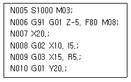
- N006
- N007
- N008
- N009
(정답률: 48%)
74. 피드백 장치 없이 스태핑 모터를 사용해서 위치를 제어하는 NC 서보기구 방식은?
- 개방회로 방식
- 복합회로 방식
- 폐쇄회로 방식
- 반 폐쇄회로 방식
(정답률: 66%)
75. 머시닝센터에서 주축 회전수가 1000rpm이고 엔드밀 지름이 10mm일 때 접속속도는?
- 3.14m/min
- 31.4m/min
- 314m/min
- 3140m/min
(정답률: 71%)
76. 공작기계 안전사항으로 틀린 것은?
- 절삭 공구는 가급적 짧게 설치한다.
- 기계 위에 공구나 재료를 올려놓지 않는다.
- 칩을 제거할 때는 브러시나 칩 클리너를 사용한다.
- 가공 중 문을 열어 공작물의 이상 유무를 점검한다.
(정답률: 86%)
77. CNC선반에서 절삭공구를 A에서 B로 원호보간하는 프로그램으로 틀린 것은?
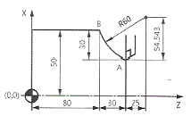
- G02 U60.0 W30.0 R60.0 F0.3;
- G02 X100.0 Z80.0 R60.0 F0.3;
- G02 X100.0 Z80.0 I54.543 K25.0 F0.3;
- G02 U60.0 W-30.0 I54.543 K25.0 F0.3;
(정답률: 44%)
78. 머시닝센터에서 XY 평면을 설정하는 코드는?
- G17
- G18
- G19
- G20
(정답률: 77%)
79. CNC선반 프로그램 중 다음의 복합고정형 나사절삭 사이클에 대한 설명 중 틀린 것은?
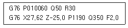
- Q50은 정삭 여유값이다.
- Q350은 첫 번째 절입량이다.
- P1190는 나사산의 높이값이다.
- P010060의 01은 다듬질 횟수다.
(정답률: 48%)
80. 다음 CNC 선반가공 프로그램에서 일감 지름이 20mm일 때 주축의 회전수는 약 얼마인가?
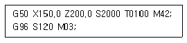
- 955 rpm
- 10⑤ rpm
- 1910 rpm
- 2000 rpm
(정답률: 65%)
이유: 공구의 보관을 위한 작업복의 주머니가 많을수록 작업 중에 필요한 공구를 쉽게 찾을 수 있고, 작업 중에 공구가 떨어지거나 잃어버리는 일을 방지할 수 있기 때문이다.